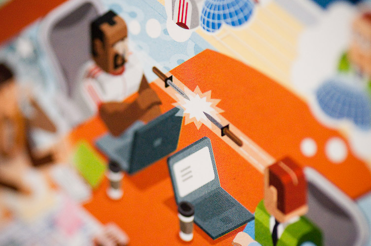

web design, workflow
What exactly does it take to get a web site off the ground?
Posted by Jeya Karthika on .So, It was just one of those browsing sessions when you click a link from an article, get caught up and after some thousand clicks, start wondering how the hell did I end up here! That is how I found this amazing interactive poster that illustrates the very complicated life-cycle of building and launching a website from the ground up. This is more than a couple of years old. But hey, I loved it and thought of sharing the link here for people like me who have missed it before.
So, What exactly does it take to get a web site off the ground? Click on the below image to check out "A website named Desire" by the awesome people from Mix Online. (You will have to install silverlight to view).

Tension between creatives and technical types. (Photo Credit: Mix Online)
Nishant Kothary the creative director of this infographic poster talks about the practical lessons and notable experiences during the design and development of MIX Online from sketch to full-featured site in the video linked below. Of course, It is dated back from March 2009 but a good one to watch. You can watch and download it from here.
I hope you will enjoy it too.. :)